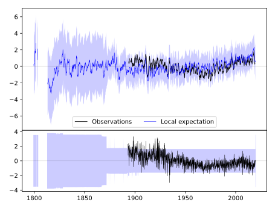
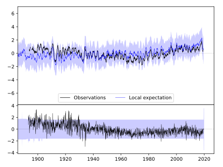
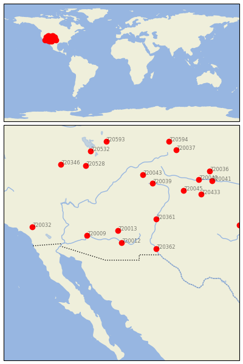

SAFFORD AGRICULTRL C [USA]


| Neighbour | Name | Country | Distance | Lon/Lat | Years |
|---|
| 720012 | SAFFORD AGRICULTRL C | USA | 3 | -109.7, 32.8 | 1893-2019 |
| 720013 | WHITERIVER 1 SW | USA | 114 | -110.0, 33.8 | 1871-2019 |
| 720362 | STATE UNIV | USA | 277 | -106.8, 32.3 | 1892-2019 |
| 720009 | BUCKEYE | USA | 278 | -112.6, 33.4 | 1893-2019 |
| 720361 | LOS LUNAS 3 SSW | USA | 348 | -106.8, 34.8 | 1891-2019 |
| 720039 | HERMIT 7 ESE | USA | 603 | -107.1, 37.8 | 1893-2019 |
| 720043 | MONTROSE #2 | USA | 654 | -107.9, 38.5 | 1885-2019 |
| 720045 | TRINIDAD | USA | 680 | -104.5, 37.2 | 1886-2019 |
| 720032 | REDLANDS | USA | 710 | -117.2, 34.1 | 1892-2019 |
| 720433 | KENTON | USA | 762 | -103.0, 36.9 | 1893-2019 |
| 720528 | DESERET | USA | 771 | -112.7, 39.3 | 1891-2019 |
| 720042 | LAS ANIMAS | USA | 832 | -103.2, 38.1 | 1867-2019 |
| 720346 | MCGILL | USA | 864 | -114.8, 39.4 | 1888-2019 |
| 720532 | TOOELE | USA | 886 | -112.3, 40.5 | 1895-2019 |
| 720041 | HOLLY | USA | 898 | -102.1, 38.0 | 1893-2019 |
| 720525 | QUANAH 2 SW | USA | 932 | -99.8, 34.3 | 1891-2019 |
| 720036 | CHEYENNE WELLS | USA | 943 | -102.3, 38.8 | 1889-2019 |
| 720593 | EVANSTON 1 E | USA | 952 | -111.0, 41.3 | 1889-2019 |
| 720037 | FT COLLINS | USA | 959 | -105.1, 40.6 | 1873-2019 |
| 720594 | LARAMIE RGNL AP | USA | 1009 | -105.7, 41.3 | 1866-2019 |